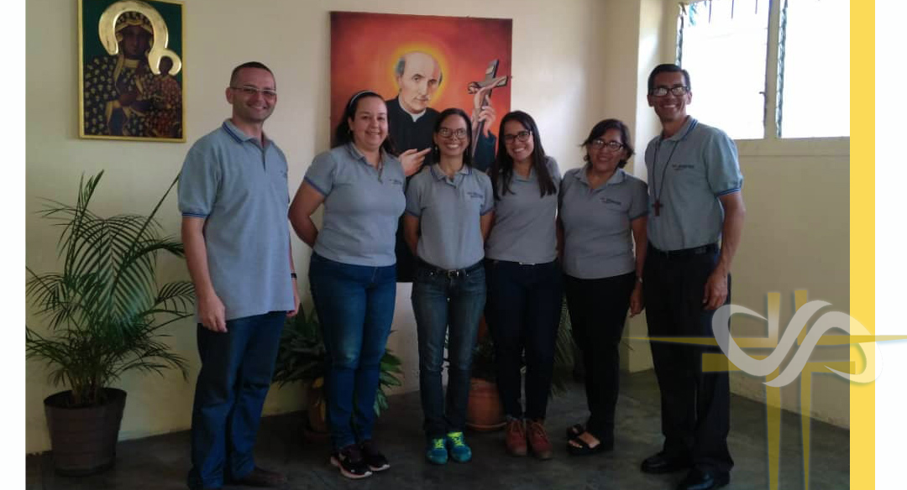

Reencender y propagar la Caridad entre todos los miembros del Pueblo de Dios, proclamando el Evangelio, mediante palabra y obra, atendiendo a todos los necesitados de hambre espiritual y corporal. Utilizando todos los recursos y herramientas posibles, desde el contacto personal hasta los medios electrónicos.
Alcanzar todos los lugares donde se encuentren personas en condicion vulnerable, movidos por la intención de reavivar la fe, la unión y la caridad entre todos los miembros del Pueblo de Dios, encaminado a ser una sola familia con un mismo ideal.
¿En qué consiste?: En la entrega de alimentos no perecederos para familias en situación de riesgo, primordialmente con niños y con personas de tercera edad, que viven en la comunidad de El Carmen, Nueva Casarapa y La Villa Panamericana en Guarenas, estado Miranda.
¿En qué consiste?: En la entrega de kit de medicinas que pueden contener alcohol, ácido fólico, acetaminofen, antialérgicos pediátricos, hipertensivos, antigripales, vitámina C, complejo vitáminico para niños y ancianos.
¿En qué consiste?:Tomar conciencia de ser enviados a nuestras comunidades a continuar el apostolado al que somos llamados para que cuanto antes haya un solo rebaño bajo un solo pastor.
¿En qué consiste?: El seguimiento de Jesús es el centro de nuestra espiritualidad. Hablar de espiritualidad, en la perspectiva cristiana, no será otra cosa que hablar de la experiencia del Espíritu de Jesús de Nazareth, Apóstol del Eterno Padre.
La Unión del Apostolado Católico es un grupo de Sacerdotes y Laicos con la misión de reavivar la fe, llevando a todo los a la unidad en Cristo a través del ejemplo de su Padre fundador San Vicente Pallotti.
Unión del Apostolado Católico en Venezuela. Nos encontramos en Caracas, Guarenas y Upata.
Quieres conocer mas de nosotros, descarga nuestra Revista Mensual:
"El Apóstol"
¡La Caridad de Cristo nos Impulsa!
Más“No se deben mirar con indiferencia las pequeñas ofrendas y contribuciones. A menudo se obtienen grandes resultados con medios pequeños, que reunidos y juntados se vuelven grandes”.
San Vicente Pallotti